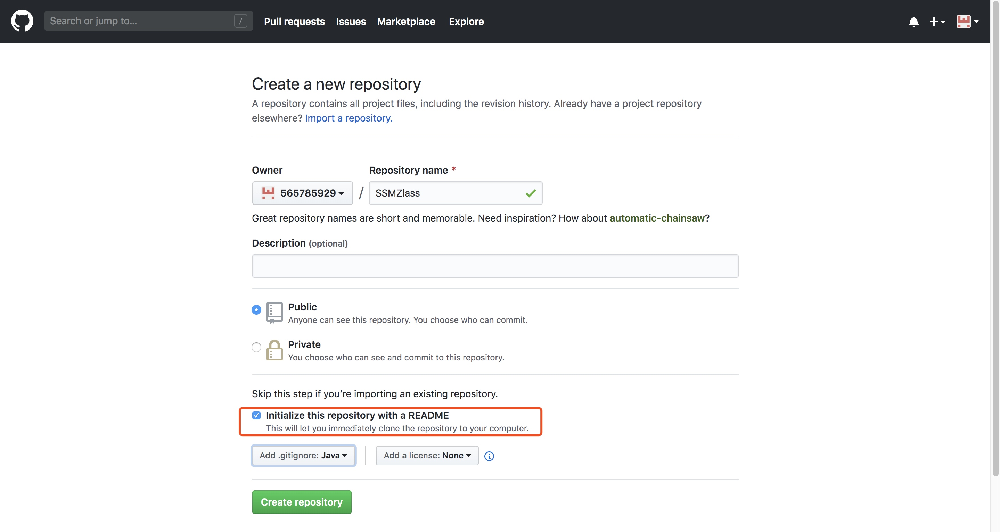
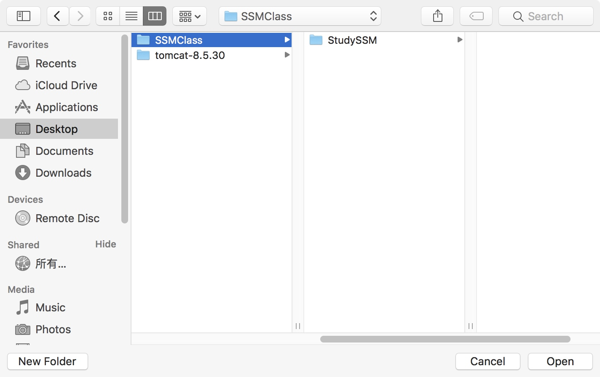
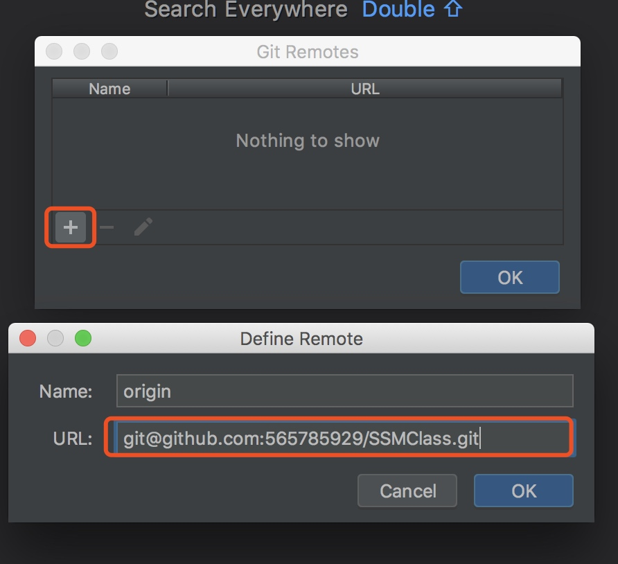
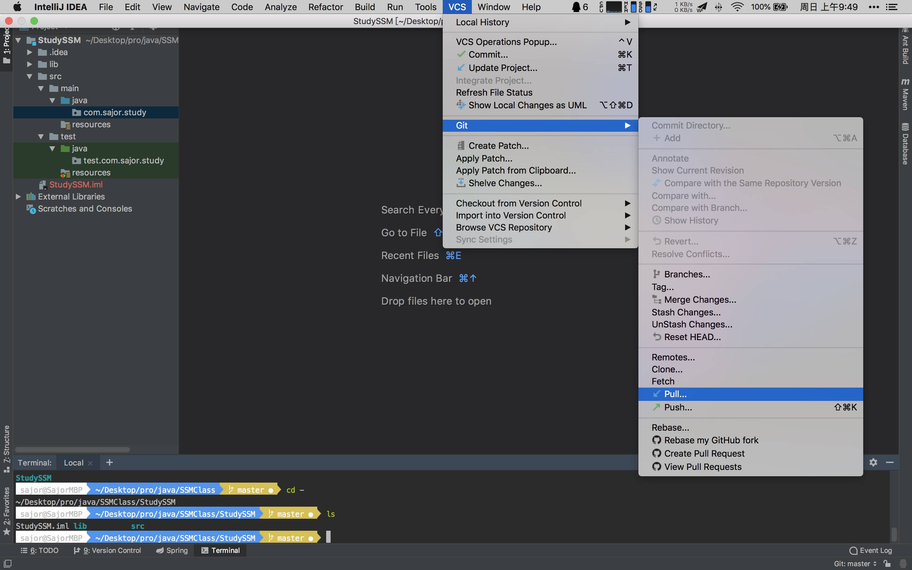
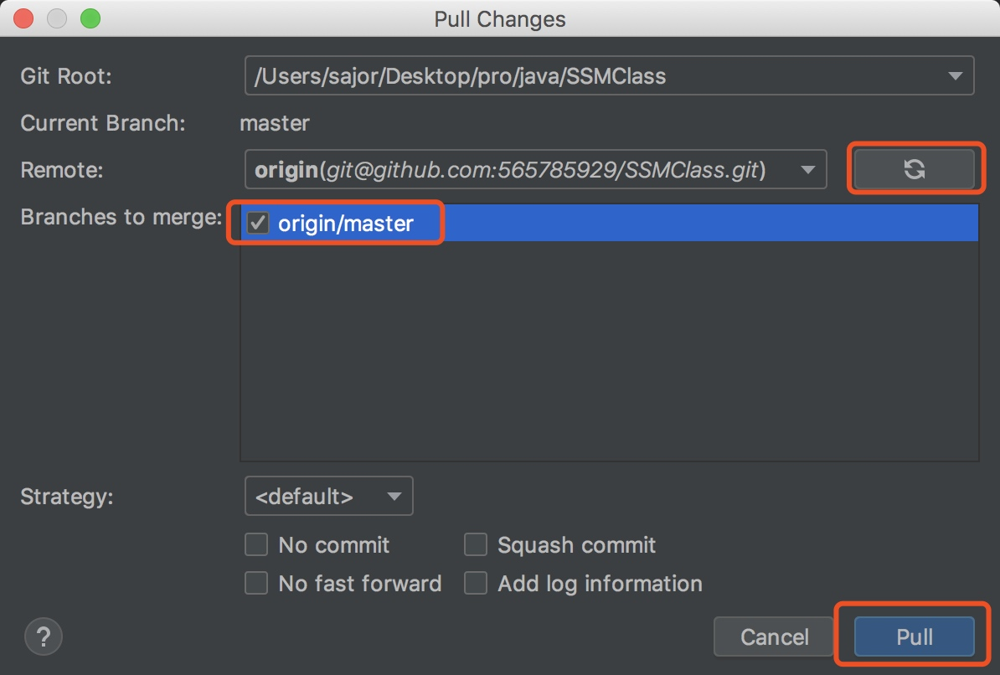
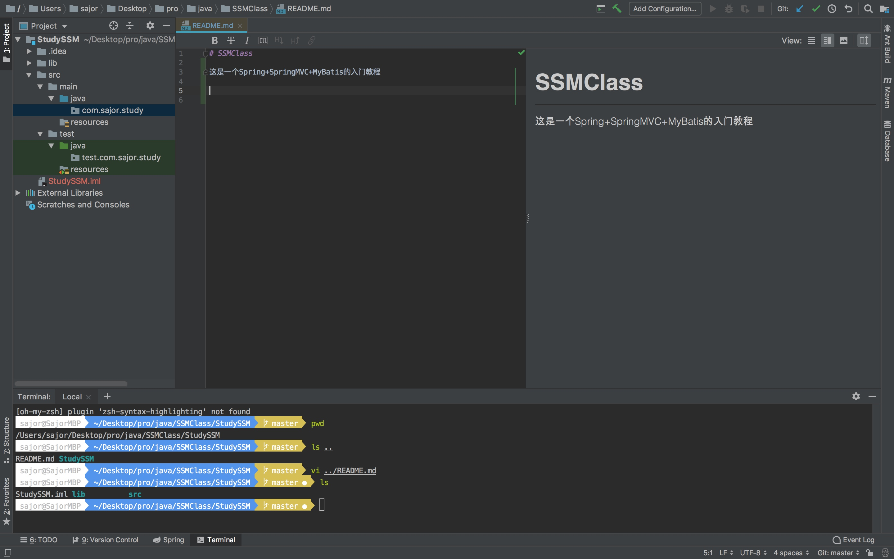
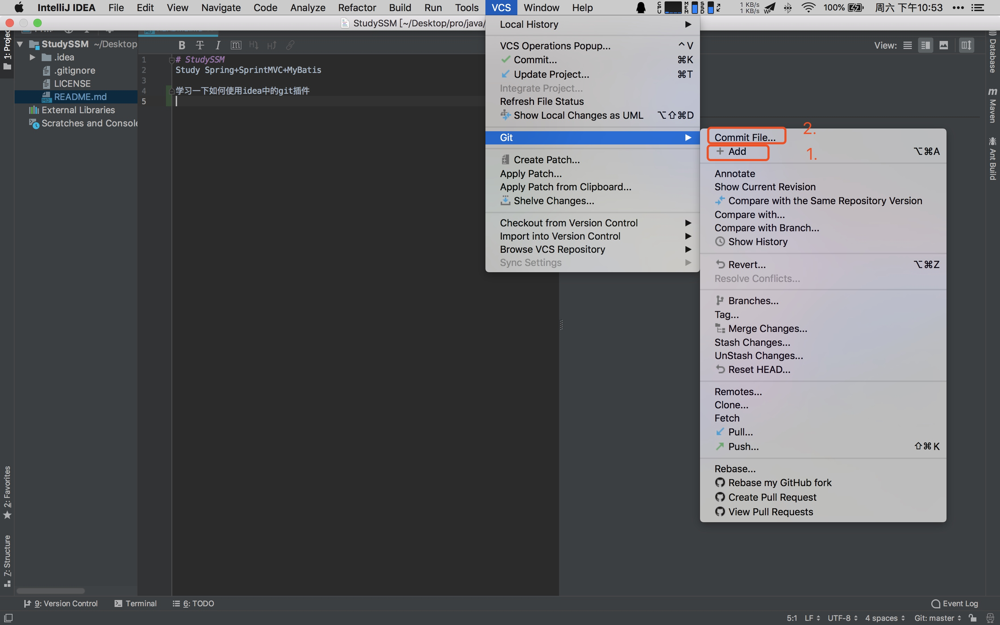
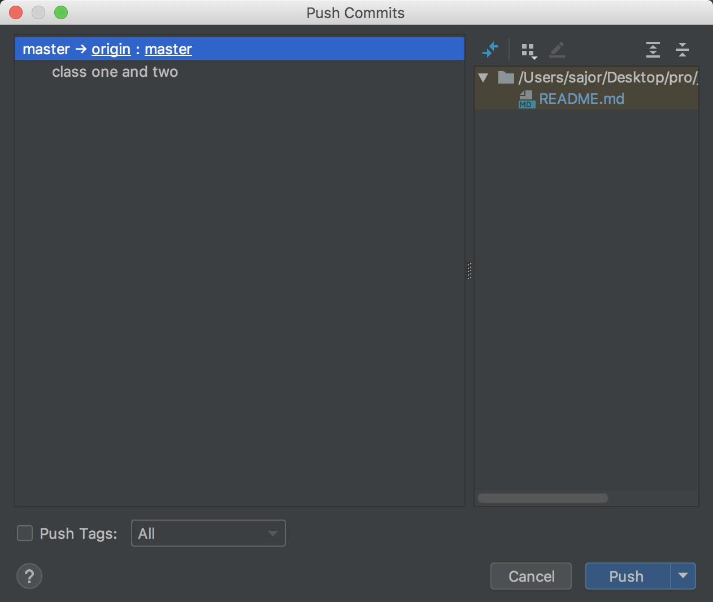
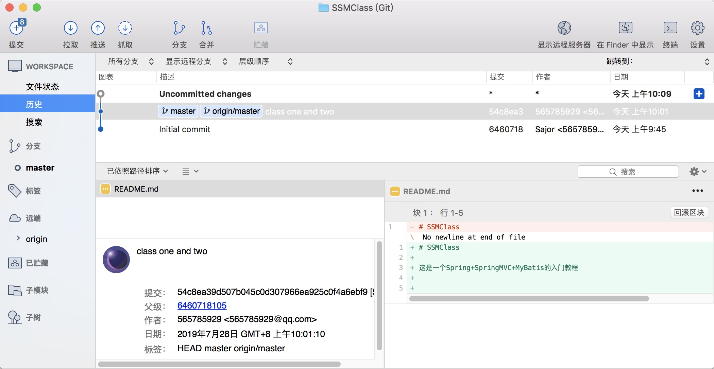

创建远程仓库
首先申请github账号这个不讲了，然后创建一个项目名为 SSMClass ，信息填写好之后，点击create repository

之后点击Clone or download，选择use ssh，之后复制一下这个链接留作备用
git@github.com:565785929/SSMClass.git

创建本地仓库并远程
1、 初始化本地git仓库
然后使用IDEA打开这个文件夹，点击VCS -> Import into Version Control -> Create Git Repository。 相当于这条git命令
git init

因为之后还会提交新的工程所以我们选择此工程的上一级目录

2、 连接远程仓库
相当于这条git命令
git remote add origin git@github.com:565785929/SSMClass.git
选择要远程的仓库地址

点击+号，将刚刚创建的github仓库的地址粘贴进去，点击ok

3、 拉取远程仓库文件
相当于这条git命令, 更新本地仓库
git pull

点击刷新， 待加载出来之后，勾选origin/master 之后pull

之后SSMClass文件夹下会出现README.md文件，如此便成功了。

4、 添加已经修改文件，之后上传到本地仓库
相当于这两条git命令
git add
git commit
首先修改一下Pull下来的README.md文件

之后先点击add 再点击commit

之后是这样输入一些commit message方便了解你每个版本都做了啥子，点击commit

之后点击Push便可以上传到远程仓库了

点击push

之后可以到github上查看一下

之后每章代码我都会提交一下，所以我提交的顺序也是章节的顺序，和每次的修改
管理工具
Git管理工具:可以用Eclipse、Intellij IDEA带的git客户端。 强烈建议使用下面这个免费工具SourceTree
